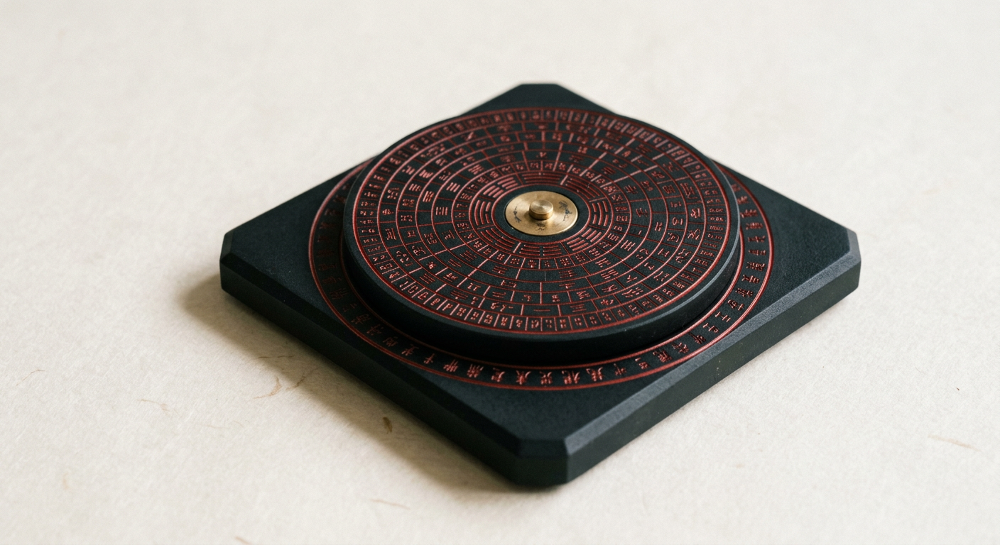
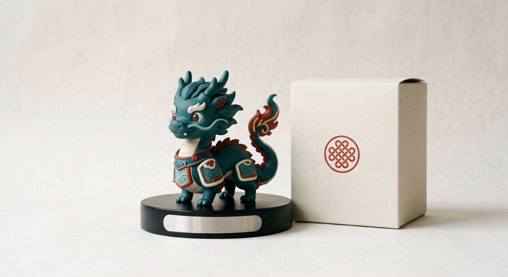
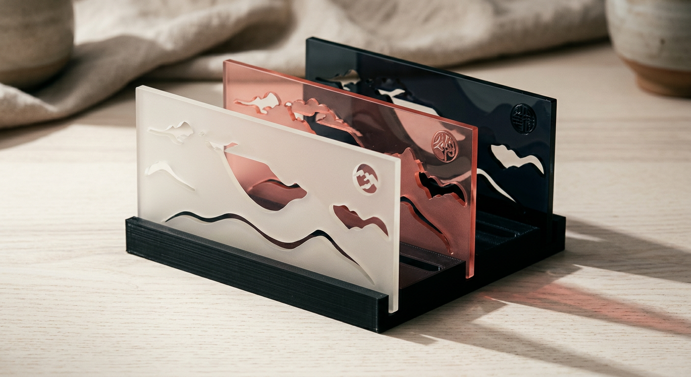

迷你六壬式盘招牌¥199 起
天盘可转、地盘固定，刻上你某次关键起课的盘面＋名字日期，致敬汉代六壬式盘。刻字款 ¥299，黄铜轴款 ¥399。
大六壬
起一课，3 秒给你一个倾向、一个理由、一步行动。
先选一个类别
这是一种古老的思考工具，不是预言。决定权和责任都在你。涉及健康、法律、投资请找专业人士。
周边商店 · 3D 按需打印

天盘可转、地盘固定，刻上你某次关键起课的盘面＋名字日期，致敬汉代六壬式盘。刻字款 ¥299，黄铜轴款 ¥399。

盲盒 ¥69；定制款 ¥159，可选天将、底座刻字。

初、中、末三层叠片，¥129；刻字款 ¥169。
3D 按需打印，约 5–10 天发货；定制商品不支持无理由退换。周边为文创纪念品，不具备任何开运、转运功效。
首批 3D 打印定制款即将开售，开通后第一时间通知你。